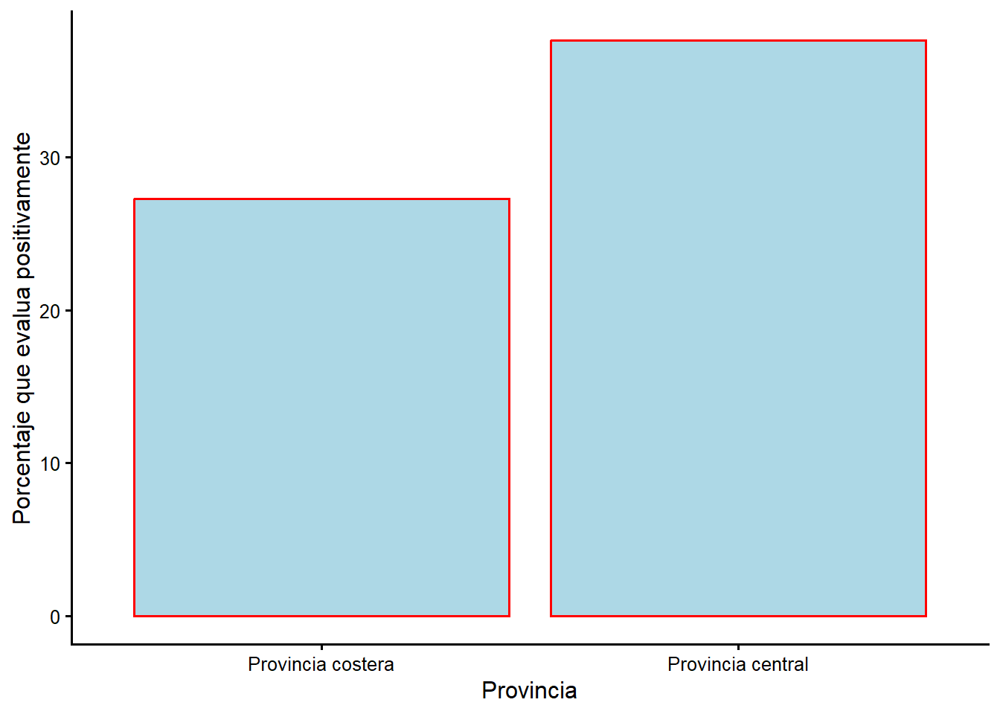
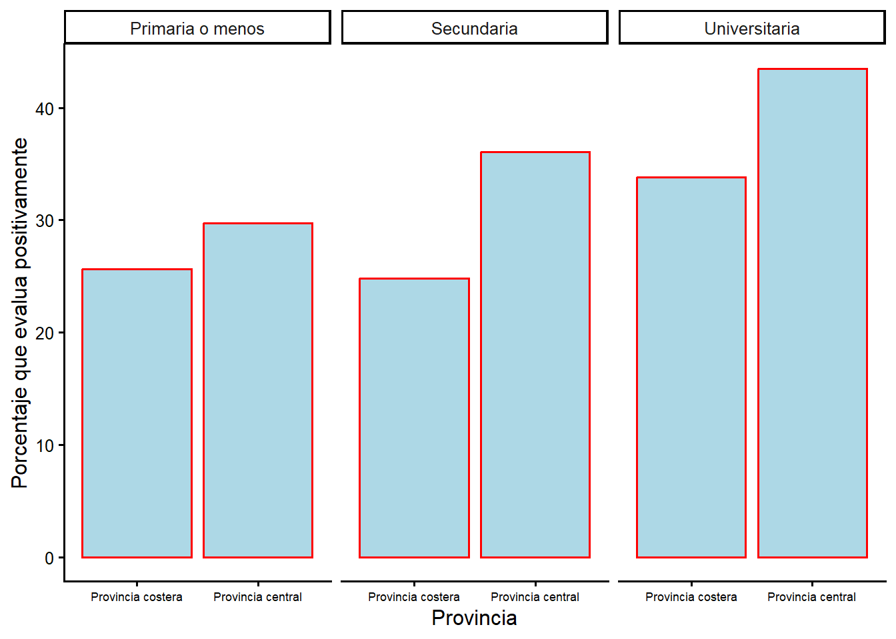

Capitulo 7 Modelos estadisticos con muchos predictores
Este capitulo introduce el modelo estadistico mas usado en las ciencias sociales y el bloque de construccion de modelos mas complejos que han surgido para enfrentar retos de investigacion especificos.
El modelo lineal simple con mas de un predictor se conoce como modelo multivariado o regresion multiple. Las ciencias sociales usan este enfoque para estudiar comportamiento, evaluar politicas publicas o pronosticar eventos. Tambien es la base de modelos mas complejos en campos que van de la salud publica a las ciencias ambientales. Nos interesa el modelo multivariado porque ofrece una forma flexible de evaluar simultaneamente los efectos de muchos predictores en un mismo conjunto de pruebas. Podemos aislar el efecto de un factor “controlando” por una variedad de otros factores.
7.1 ¿Que es la comparacion controlada?
Recuerda la distincion entre investigacion experimental y observacional. La investigacion experimental en ciencias sociales aparece tanto en el trabajo de politicas publicas (las personas usuarias se asignan al azar a control o intervencion) como en encuestas o experimentos de laboratorio (los sujetos se exponen a informacion o situaciones distintas). En este curso dependemos de un enfoque observacional, usando una muestra de potenciales votantes. El reto es que podriamos querer comparar dos grupos (por ejemplo, personas jovenes y mayores), pero no podemos aislar el efecto solo de la edad. Las personas mayores tienen, en promedio, mas problemas de salud, menor nivel educativo y viven en lugares distintos. Para aislar el efecto de la edad (o de cualquier \(X\) que nos importe) debemos “controlar” por otras diferencias entre los grupos.
La suposicion basica del modelo lineal simple es que el predictor principal que nos interesa (\(X\)) tiene un vinculo con el comportamiento o actitud que investigamos (\(Y\)). La comparacion controlada consiste en considerar una tercera variable, \(Z\), relacionada tanto con \(X\) como con \(Y\). La pregunta es: ¿se mantiene el vinculo entre \(X\) y \(Y\) si lo examinas en distintos niveles de \(Z\)?
Podemos ampliar la investigacion para incluir varias variables de control. Esta es la logica de la comparacion controlada. Por ejemplo, si nos interesa como el nivel educativo (\(X\)) influye en el voto por el PAC (\(Y\)), quizas queramos controlar por la provincia (\(Z\)). Sabemos que la provincia esta vinculada con el voto y con la educacion, asi que nuestra comprension del vinculo podria estar distorsionada.
Considera lo que podria ocurrir al contrastar el vinculo entre \(X\) y \(Y\) en distintos niveles de \(Z\):
- Podrias no ver cambios respecto a la investigacion original: \(X\) afecta a \(Y\) de la misma manera en todos los niveles de \(Z\). Esto se llama efecto aditivo.
- Podrias descubrir que un vinculo entre \(X\) y \(Y\) que parecia importante se reduce a cero al controlar por \(Z\). En ese caso el resultado original se llama espurio.
- Podria ser que no encuentres vinculo entre \(X\) y \(Y\), pero que el vinculo emerja al hacer una comparacion controlada. Esto seria un ejemplo de confusion (confounding).
- Finalmente, podrias encontrar que el vinculo entre \(X\) y \(Y\) es distinto segun los niveles de \(Z\) (positivo en unos subgrupos y negativo en otros). Esto se conoce como efecto interactivo.
En los capitulos anteriores describimos tres formas de usar tablas y figuras para mostrar el vinculo entre dos variables: tablas de contingencia, graficos de barras y graficos de lineas. Podemos usar las mismas estrategias para implementar una comparacion controlada.
7.1.1 Provincia y voto: tabulacion cruzada con una variable de control
A veces se afirma que ciertas regiones de un pais son politicamente distintivas. En Costa Rica, la provincia central concentra la capital y el mayor desarrollo economico, mientras que las provincias costeras son mas rurales. ¿Vota distinto la provincia central? ¿Se debe esa diferencia a la composicion educativa de cada region, o se mantiene al controlar por educacion?
La Tabla 7.1 muestra el porcentaje de voto por el PAC segun la provincia.
Tabla 7.1 Voto por el PAC, por provincia, 2020
| Provincia | Porcentaje voto PAC |
|---|---|
| Provincia costera | 31.2 |
| Provincia central | 52.0 |
Hay una diferencia considerable: el PAC obtuvo alrededor del 52 % en la provincia central frente a poco mas del 31 % en las provincias costeras. ¿Que podria estar distorsionando esta relacion? Una caracteristica que distingue a las regiones es el nivel educativo: la provincia central concentra la mayor proporcion de personas con educacion universitaria, y ya vimos que la educacion se asocia con el voto por el PAC. Entonces necesitamos controlar por educacion para aclarar el vinculo entre provincia y voto. La Tabla 7.2 reporta la comparacion controlada.
Tabla 7.2 Voto por el PAC en la provincia central y costera, por nivel educativo, 2020
| Nivel educativo | Provincia | Porcentaje |
|---|---|---|
| Primaria o menos | Provincia costera | 27.3 |
| Primaria o menos | Provincia central | 28.5 |
| Secundaria | Provincia costera | 22.4 |
| Secundaria | Provincia central | 43.4 |
| Universitaria | Provincia costera | 50.8 |
| Universitaria | Provincia central | 71.3 |
Las diferencias regionales siguen presentes, e incluso se agrandan, cuando controlamos por educacion. Entre quienes tienen secundaria, el voto por el PAC es 22 % en la costa y 43 % en el centro; entre quienes tienen educacion universitaria, 51 % en la costa y 71 % en el centro. La composicion educativa de cada region confundia en parte nuestra comprension: la diferencia regional no desaparece, se mantiene (e incluso crece) dentro de cada nivel educativo. Esto es un ejemplo de efecto aditivo/interactivo: la provincia importa, y su efecto es mayor entre quienes tienen mas educacion.
7.1.2 Evaluacion del gobierno y provincia: graficos de barras con control
Tambien podemos ilustrar la comparacion controlada con la evaluacion del gobierno. La Figura 7.1 resume la proporcion de personas que evaluan positivamente la gestion del gobierno segun la provincia.
Figura 7.1 Evaluacion positiva de la gestion, por provincia, 2020

Figura 7.1. Evaluacion positiva de la gestion del gobierno por provincia
La Figura 7.2 desglosa el vinculo entre provincia y evaluacion del gobierno en los tres niveles educativos: una comparacion controlada. Ahora podemos entender el vinculo entre la evaluacion y la provincia para personas con niveles educativos similares.
Figura 7.2 Evaluacion de la gestion por provincia, controlando por educacion, 2020

Figura 7.2. Evaluacion de la gestion por provincia, controlando por educacion
Los datos sugieren que la provincia central evalua mejor la gestion en todos los niveles educativos. La educacion y la provincia parecen ejercer efectos independientes sobre la evaluacion del gobierno. Este es un buen ejemplo de efectos aditivos.
7.2 Entonces, ¿como encaja un modelo estadistico en todo esto?
Hay dos razones por las que no podemos usar tablas y figuras de forma fiable para estas comparaciones controladas. En algunos casos, \(Z\) tiene muchas categorias, lo que implica demasiadas tablas o demasiadas barras. Ademas, en cuanto empiezas a pensar en varias variables de control, la estrategia se derrumba por completo. Por ejemplo, si quisieras revisar el vinculo entre \(X\) y \(Y\) para cada combinacion posible de provincia (2), genero (2), educacion (3) y edad (varias), necesitarias decenas de tablas separadas, cada una con pocas personas.
Como alternativa a mirar explicitamente el vinculo entre \(X\) y \(Y\) para cada valor de \(Z\), podemos simplemente agregar la variable de control al modelo lineal. Ese paso resulta ser equivalente a mirar la pendiente para cada subgrupo posible y promediar entre todos esos grupos.
Para el modelo lineal simple, recordamos que suponemos una forma funcional:
\[Y=\beta_0+\beta_1X+\epsilon\]
El modelo multivariado es conveniente porque es facil agregar multiples variables explicativas. Tus intuiciones sobre “que importa” y las expectativas teoricas deben guiar tu eleccion de variables. El proceso de decidir que variables incluir se llama especificacion del modelo. La forma general es:
\[Y=\beta_0+\beta_1X_1+\beta_2X_2+\beta_3X_3+\epsilon\]
Nos centramos en tres formas en que el modelo multivariado difiere del de dos variables:
- los coeficientes se interpretan de forma ligeramente distinta;
- usamos la R cuadrada ajustada (en lugar de la R cuadrada) para evaluar que modelos se ajustan mejor; y
- introducimos los coeficientes estandarizados para entender que variables importan mas.
7.3 El modelo multivariado
7.3.1 Coeficientes parciales frente a coeficientes completos
Para el modelo bivariado, el calculo de \(\beta_1\) es simple. La interpretacion es facil: \(\beta_1\) describe cuanto cambia \(Y\) por un cambio de una unidad en \(X\).
En el modelo multivariado la interpretacion es algo mas complicada. El coeficiente describe cuanto cambia \(Y\) por un cambio de una unidad en X1, manteniendo constantes las demas X.
El efecto de X1 (\(\beta_1\)) en el modelo multivariado es un efecto parcial (distinto del efecto completo que se observa en el modelo bivariado). La idea crucial es que la unica forma en que importa introducir una variable de control es si esa variable esta realmente relacionada con la variable que te interesa. Cuanto mayor sea la covarianza entre X1 y X2, mayor sera la diferencia entre los coeficientes de los dos modelos.
Una implicacion: siempre deberias entender la correlacion entre cada par de variables \(X\) de un modelo.
7.3.2 R cuadrada ajustada
La R cuadrada tiene limitaciones para comparar el rendimiento de dos modelos multivariados. Cada vez que agregas una variable \(X\), la R cuadrada aumenta. Dado esto, agregariamos TODAS las variables posibles para maximizar la R cuadrada. Pero tambien es bueno tener un modelo simple. Para “premiar” los modelos simples, usamos una medida alternativa de bondad de ajuste: la R cuadrada ajustada.
\[R^2_{adj} = 1-\frac{(1-R^2)(n-1) } {n-k-1}\]
La R cuadrada ajustada puede ser muy cercana a la R cuadrada si tienes una muestra muy grande y pocos predictores. En el ejemplo de abajo, los dos numeros son parecidos porque tenemos pocos predictores y cientos de observaciones. Pero con muestras mas pequenas es convencional usar la R cuadrada ajustada. Si dos modelos de la misma \(Y\) tienen distinto numero de variables \(X\), deberias usar la R cuadrada ajustada para compararlos.
7.3.3 ¿Como determinamos que importa de verdad? Los coeficientes estandarizados
En el modelo multivariado puedes usar dos piezas de informacion para determinar que \(X\) es mas importante para predecir \(Y\):
- Determinar el rango de cada \(X\) (\(\Delta X\)) y multiplicarlo por su coeficiente, para comparar el tamano del efecto sobre \(Y\).
- Usar un coeficiente estandarizado (que se etiqueta \(\beta^*\)). El calculo es:
\[\beta_1^*=\beta_1 * \frac{\sigma_x}{\sigma_y}\]
El coeficiente estandarizado con el mayor valor absoluto tiene el mayor efecto: dice cuanto cambia \(Y\) (en desviaciones estandar) por cada aumento de una desviacion estandar en \(X\). Un vistazo rapido a los coeficientes estandarizados te permite ordenar el tamano de los efectos de mayor a menor, algo que no puedes hacer con los coeficientes sin estandarizar.
7.4 Un ejemplo: usar el modelo multivariado para entender la evaluacion del gobierno
El vinculo entre la evaluacion del gobierno y el apoyo al sistema nos ayudo a entender la correlacion y la regresion. Abajo consideramos si la nota al gobierno esta impulsada por el apoyo al sistema, por la percepcion de la economia o por ambos. Tambien consideramos un modelo mas amplio para ver como se usan los coeficientes estandarizados.
Los modelos de una sola variable que predicen la nota al gobierno se reproducen en la Tabla 7.3. La primera columna reporta el vinculo con el apoyo al sistema; la segunda, el vinculo con el voto por el PAC.
Tabla 7.3 Dos modelos bivariados que predicen la nota al gobierno
| Nota al gobierno | ||
| (1) | (2) | |
| Apoyo al sistema | 0.576*** | |
| p = 0.000 | ||
| Voto PAC | 1.248*** | |
| p = 0.000 | ||
| Constante | 1.200*** | 3.443*** |
| p = 0.00000 | p = 0.000 | |
| N | 923 | 798 |
| R2 | 0.153 | 0.050 |
| Adjusted R2 | 0.152 | 0.049 |
Observa que el coeficiente del apoyo al sistema es 0,58 y el del voto por el PAC es 1,25. La R cuadrada es mayor en el modelo que usa el apoyo al sistema (0,153) que en el del voto (0,050). ¿Como puede ser que el efecto mas grande (el voto) tenga una R cuadrada menor? Porque el apoyo al sistema se distribuye en toda la escala de 1 a 7, mientras que el voto es una dummy con dos valores; la variacion que explica el apoyo al sistema es mayor. Para resolver la incertidumbre sobre cual variable importa mas, podemos contrastar el vinculo en un solo modelo multivariado.
Tabla 7.4 Un modelo multivariado que predice la nota al gobierno, con apoyo al sistema y voto por el PAC
| Nota al gobierno | |
| Apoyo al sistema | 0.546*** |
| p = 0.000 | |
| Voto PAC | 1.030*** |
| p = 0.00000 | |
| Constante | 0.821*** |
| p = 0.002 | |
| N | 772 |
| R2 | 0.195 |
| Adjusted R2 | 0.193 |
| Coeficientes estandarizados | |
|---|---|
| Apoyo al sistema | 0.37 |
| Voto por el PAC | 0.19 |
La tabla nos dice tres cosas. Usando los niveles de significancia, sabemos que tanto el apoyo al sistema como el voto por el PAC importan: ambos efectos son positivos y significativos. Pero tambien aprendemos que el apoyo al sistema es el efecto mas poderoso: su coeficiente estandarizado es 0,37, mas lejos de cero que el del voto (0,19). Los coeficientes sin estandarizar refuerzan esta conclusion.
Podriamos usar una estrategia similar para evaluar una serie de variables. La Tabla 7.5 reporta los coeficientes de un modelo complejo: apoyo al sistema, percepcion economica, educacion, genero, edad, voto por el PAC y provincia.
Tabla 7.5 Un modelo multivariado que predice la nota al gobierno, con varios predictores
| Nota al gobierno | |
| Apoyo al sistema | 0.475*** |
| p = 0.000 | |
| Percepcion economica | 0.848*** |
| p = 0.000 | |
| Educacion | 0.188 |
| p = 0.121 | |
| Hombre | -0.306* |
| p = 0.080 | |
| Edad | -0.004 |
| p = 0.537 | |
| Voto PAC | 0.923*** |
| p = 0.00001 | |
| Provincia central | -0.082 |
| p = 0.676 | |
| Constante | -0.270 |
| p = 0.570 | |
| N | 760 |
| R2 | 0.258 |
| Adjusted R2 | 0.252 |
| Coeficientes estandarizados | |
|---|---|
| Apoyo al sistema | 0.33 |
| Percepcion economica | 0.24 |
| Educacion | 0.05 |
| Hombre | -0.06 |
| Edad | -0.02 |
| Voto por el PAC | 0.17 |
| Provincia central | -0.01 |
Este tipo de tabla tiene mucha informacion, pero podemos centrarnos en unos pocos numeros. Primero, ¿que variables podemos ignorar por no ser estadisticamente significativas? Los coeficientes de educacion, genero, edad y provincia no son estadisticamente significativos: despues de controlar por otros factores, no importan. Las variables que si importan son el apoyo al sistema, la percepcion economica y el voto por el PAC.
Para saber cuales de las variables significativas son los mejores predictores, usamos los coeficientes estandarizados. El mayor (en valor absoluto) es el apoyo al sistema (0,33), seguido de la percepcion economica (0,24) y del voto por el PAC (0,17).
Asi, podriamos concluir que quienes apoyan mas al sistema y evaluan mejor la economia, y quienes votaron por el PAC, evaluan mejor al gobierno. La R cuadrada ajustada del modelo es 0,25: alrededor del 25 % de la variacion en esta actitud se explica por las variables incluidas. Revisa la tabla para asegurarte de entender como estas conclusiones se siguen de los numeros.
7.4.1 Lo clave que hay que reportar: como cambian los coeficientes al introducir controles
¿Que pasa si los coeficientes de nuestras variables cambian entre el modelo bivariado simple y un modelo multivariado mas complejo? Esto puede significar una de cuatro cosas:
- \(\beta_1\) no cambia. No hay cambios de signo ni de direccion si se agrega el control \(Z\). Tanto \(Z\) como \(X\) influyen en \(Y\) (aditivo).
- \(\beta_1\) se vuelve no significativo si se agrega \(Z\). \(Z\) afecta a \(Y\) y a \(X\), y no hay vinculo entre \(X\) y \(Y\) al agregar \(Z\) (espurio).
- \(\beta_1\) se vuelve significativo si se agrega \(Z\). \(Z\) afecta a \(Y\) y a \(X\), y aparece un vinculo entre \(X\) y \(Y\) al agregar \(Z\) (confusion).
- \(Z\) determina como \(X\) influye en \(Y\) (interactivo). Para contrastarlo habria que crear un termino de interaccion (\(X*Z\)).
\[Y=\beta_0+\beta_1X+\beta_2Z+\beta_3(X*Z)\]
Recuerda: el foco esta siempre en los coeficientes de las variables \(X\). No nos importa como cambia la constante al comparar los modelos bivariado y multivariado.
7.5 Resumen
Los modelos estadisticos con muchos predictores son una forma simple de aislar los efectos de variables clave, una necesidad cuando trabajamos con datos observacionales. El modelo multivariado se usa ampliamente en las ciencias sociales, tanto en el analisis de politicas como en el estudio del comportamiento politico. Este enfoque es la base de estrategias de analisis mas avanzadas que han surgido en las ultimas decadas en subcampos tan diversos como la politica judicial, el estudio del congreso, las relaciones internacionales, la economia politica y el estudio de la burocracia. Si abres una revista de ciencia politica, la probabilidad de encontrar varios ejemplos de modelos estadisticos es alta: ya sabes buscar el signo, la significancia y el tamano de los efectos para entender que nos dicen esas regresiones.